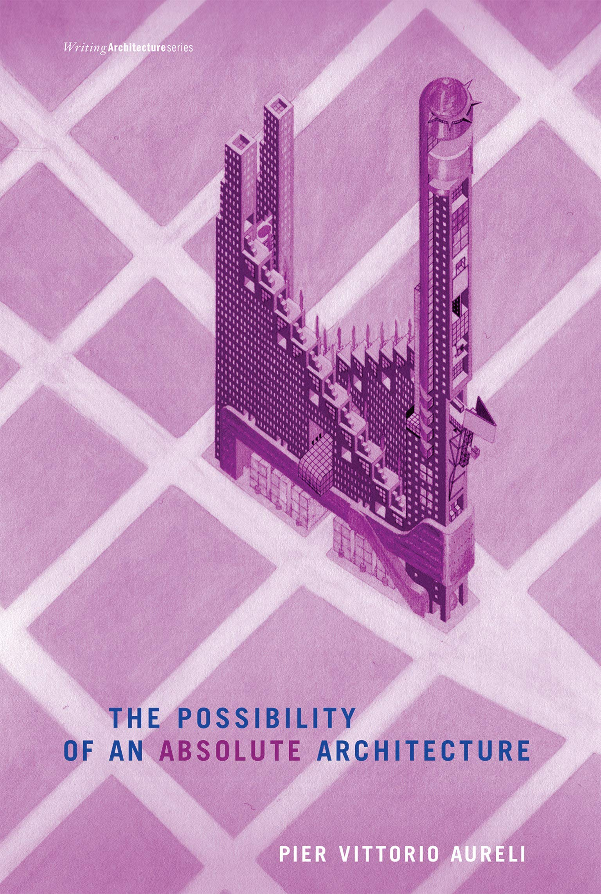
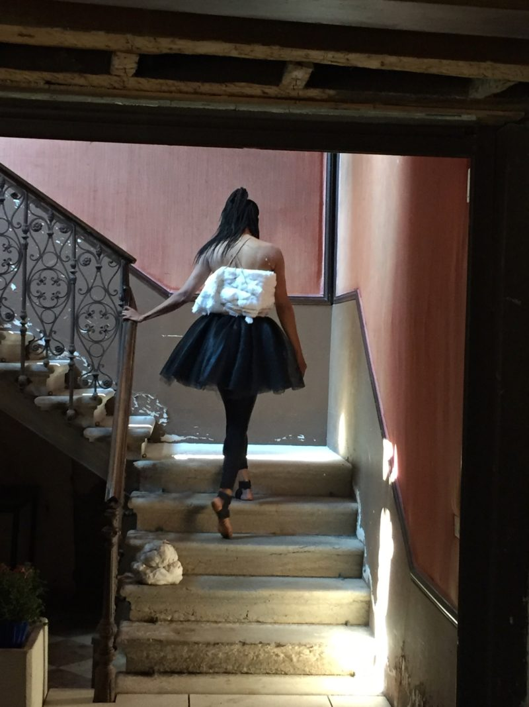
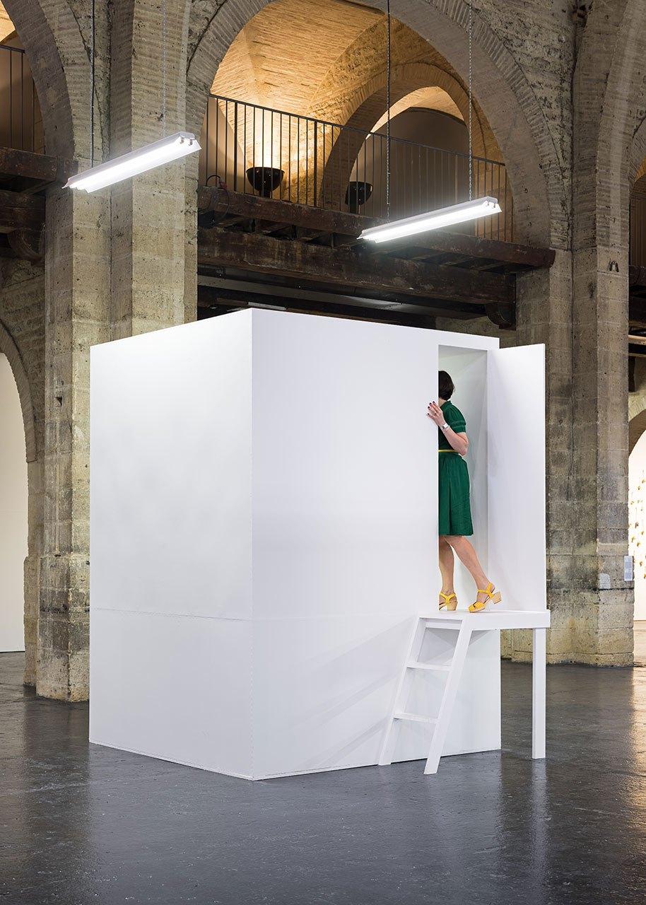

ARC EN RÊVE + CAPC PIER VITTORIO AURELI (architecte)
Cette conférence s'inscrit dans une série de 3 conférences organisées par le centre d'architecture arc en rêve, proposées dans le cadre de l'exposition du Capc Absalon Absalon présentée dans la nef du musée.
MYRIAM MIHINDOU
Trans-performance inédite dans la nef du musée et dans le cadre de l’exposition Absalon Absalon. La fin des utopies laisse place à un personnage singulier, solitaire, l’acte et son double dans des repères chamboulés où la confiance se fait dans la confiance de la défaillance.
ABSALON ABSALON
Au sein des cellules, il est moins question de claustrophobie ou de retranchement que de la construction d’un espace mental et physique à l’échelle un, à la fois protégé et connecté. Un bio-dispositif parasite fonctionnant dans un environnement considéré par l’artiste comme un ensemble d’assignations et de déterminations culturelles dont son œuvre doit lui permettre de s’affranchir.